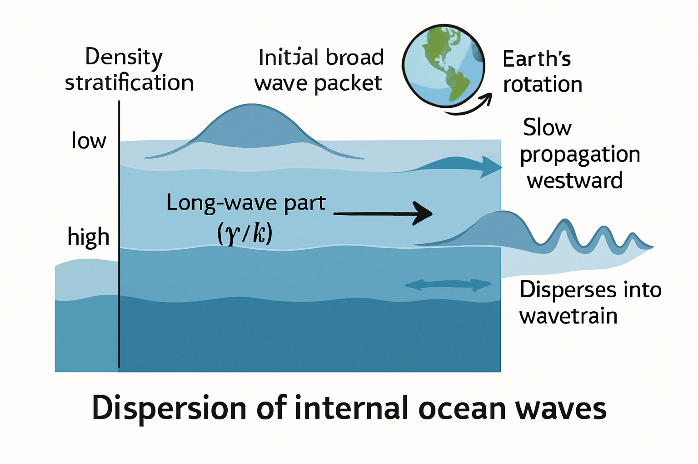

第4章：典型例子与应用
在第三章中，我们详细推导并分析了 Ostrovsky 方程的线性色散关系 ω(k) = γ/k + c0 k - β k³，以及相关的相速度 vp(k) = γ/k² + c0 - β k² 和群速度 vg(k) = -γ/k² + c0 - 3β k²。本章将通过一些具体的例子来应用这些理论结果，帮助读者更直观地理解 Ostrovsky 方程描述的波的色散特性及其在物理情境中的意义。
4.1 示例1：特定参数下的色散曲线分析
让我们考虑一组具体的参数，并分析其对应的色散曲线、相速度和群速度。
4.1.1 问题描述与参数设定
假设我们研究一个物理系统，其小振幅波动的线性演化由 Ostrovsky 方程描述。通过对系统物理特性的测量或理论推导，我们得到以下无量纲化的参数值：
- 线性平流速度
c0 = 1 - KdV型色散系数
β = 0.1 - 旋转效应系数
γ = 0.5
我们的目标是：
- 绘制此参数设置下的色散关系
ω(k)曲线。 - 绘制对应的相速度
vp(k)和群速度vg(k)曲线。 - 分析这些曲线的特征，并讨论其物理含义，特别是与无旋转情况 (KdV) 的对比。
- 找出是否存在群速度为零的波数。
4.1.2 色散曲线绘制与特征分析
根据给定的参数，我们有：
ω(k) = 0.5/k + k - 0.1 k³vp(k) = 0.5/k² + 1 - 0.1 k²vg(k) = -0.5/k² + 1 - 0.3 k²
我们将绘制这些函数在 k > 0 区间的图像。
ω(k) 曲线特征分析：
- 长波极限 (
k → 0⁺)：ω(k) ≈ 0.5/k → +∞。频率随着波数趋于零而急剧增加，这是旋转效应γ主导的结果。 - 短波极限 (
k → +∞)：ω(k) ≈ -0.1 k³ → -∞。频率随着波数增加而迅速变为大的负值，这是KdV型色散β主导的结果。 - 中间行为：由于长波时
ω很大，短波时ω为大的负值，且函数连续，ω(k)曲线必然从+∞下降到-∞。它可能存在局部极值。通过观察vg(k) = dω/dk的零点可以找到ω(k)的极值点。
vp(k) 曲线特征分析：
- 长波极限 (
k → 0⁺)：vp(k) ≈ 0.5/k² → +∞。 - 短波极限 (
k → +∞)：vp(k) ≈ -0.1 k² → -∞。 - 相速度从
+∞单调递减到-∞，中间会经过零点。令vp(k) = 0：0.5/k² + 1 - 0.1 k² = 00.5 + k² - 0.1 k⁴ = 00.1 k⁴ - k² - 0.5 = 0解关于k²的二次方程：k² = [1 ± sqrt(1 - 4*0.1*(-0.5))] / (2*0.1) = [1 ± sqrt(1 + 0.2)] / 0.2 = [1 ± sqrt(1.2)] / 0.2。
由于k²必须为正，取正根：k² = (1 + sqrt(1.2)) / 0.2 ≈ (1 + 1.095) / 0.2 ≈ 2.095 / 0.2 ≈ 10.476。
所以kvp0 ≈ sqrt(10.476) ≈ 3.237。在此波数，相速度为零。
vg(k) 曲线特征分析：
- 长波极限 (
k → 0⁺)：vg(k) ≈ -0.5/k² → -∞。 - 短波极限 (
k → +∞)：vg(k) ≈ -0.3 k² → -∞。 - 群速度从
-∞开始增加，可能达到一个最大值，然后再次减小到-∞。这意味着ω(k)曲线的斜率先从一个大的负值增加（斜率变缓），可能变为正，然后再减小为负值且越来越陡。 - 寻找群速度为零的波数
kvg0：令vg(k) = 0：-0.5/k² + 1 - 0.3 k² = 0-0.5 + k² - 0.3 k⁴ = 00.3 k⁴ - k² + 0.5 = 0解关于k²的二次方程。判别式Δ = (-1)² - 4 * 0.3 * 0.5 = 1 - 0.6 = 0.4 > 0。
k² = [1 ± sqrt(0.4)] / (2*0.3) = [1 ± sqrt(0.4)] / 0.6。
sqrt(0.4) ≈ 0.632。
k1² = (1 + 0.632) / 0.6 ≈ 1.632 / 0.6 ≈ 2.72=>k1 ≈ sqrt(2.72) ≈ 1.649。
k2² = (1 - 0.632) / 0.6 ≈ 0.368 / 0.6 ≈ 0.613=>k2 ≈ sqrt(0.613) ≈ 0.783。
在这两个波数k1和k2处，群速度为零。这意味着在这些波数附近，波包的能量传播非常缓慢，甚至可能停滞（在实验室参考系中）。这对应于ω(k)曲线上的局部最大值和局部最小值。 根据分析，ω(k2 ≈ 0.783)处为局部最大值，ω(k1 ≈ 1.649)处为局部最小值。
4.1.3 物理含义解读
- 旋转效应的主导性：在长波区域 (
k较小)，γ/k项使得频率非常高，相速度和群速度的绝对值也很大，且群速度为负。这与无旋转的KdV情况（ω(0)=0, vp(0)=vg(0)=c0）形成鲜明对比。这意味着非常长的波受到旋转的强烈影响，其传播特性与经典KdV波完全不同。 - KdV型色散的主导性：在短波区域 (
k较大)，-βk³项主导，频率、相速度和群速度都趋于大的负值。这类似于KdV方程的行为，表明短波主要受KdV型色散控制。 - 群速度为零与能量局域化：在
k1 ≈ 1.649和k2 ≈ 0.783这两个波数处，群速度为零。这意味着相应波长的波包在实验室参考系中不传播能量（或传播极慢）。这种情况可能导致波能量在这些特定波数附近积累，形成所谓的“驻波包”或“陷波模式”。这在实际物理系统中可能导致能量的集中和特定波长的选择性放大。 - 相速度与群速度的差异：在整个波数范围内，
vp(k)和vg(k)通常不相等，表明波是强色散的。波包在传播过程中会发生变形和展宽。 - 与无旋转情况对比：如果
γ=0，则ω(k) = k - 0.1k³。此时ω(0)=0，vg(0)=1。vg(k) = 1 - 0.3k²，只有一个零点k = sqrt(1/0.3) ≈ 1.826。旋转项γ的引入，极大地改变了长波的行为，并可能引入多个群速度为零的波数。
4.1.4 插图规划：示例1的色散曲线图
插图10: 示例1的色散曲线图。包含ω(k), v_p(k), v_g(k) vs k 的子图，清晰标注长短波行为、极值点、零点等，并可对比γ=0的情况。
4.2 示例2：Ostrovsky 方程描述的物理现象中的色散特性
考虑一个更具体的物理情境：海洋中的大尺度内部波，受到地球自转的影响。
4.2.1 具体物理背景介绍 (如海洋内波)
海洋通常具有稳定的密度分层，即密度随深度增加。在这些密度梯度显著的区域（如温跃层、盐跃层），可以存在内部波。内部波与我们熟悉的水面波不同，它们在流体内部传播，其恢复力主要来自重力和浮力。内部波的振幅可以非常大（数十甚至上百米），波长可达数十公里，周期从几分钟到几小时甚至更长。
对于大尺度的海洋内部波（波长远大于水深），地球的自转（科里奥利效应）变得非常重要。Ostrovsky 方程正是在这种背景下被提出来描述这类受旋转影响的弱非线性长内部波的演化。
在这种情况下，方程中的参数 c0, α, β, γ 可以通过海洋的典型参数（如Brunt-Väisälä频率（浮力频率）、水深、旋转频率（科里奥利参数f）、非线性参数等）导出。
c0通常与线性长内部波的模态速度有关。α与非线性效应强度有关，取决于波幅与水深的比以及密度分层结构。β与短波色散有关，取决于水深和分层结构。γ与科里奥利参数f(等于2Ωsin(latitude)，Ω是地球自转角速度) 直接相关，通常γ正比于f²或某个与f相关的量。
4.2.2 如何应用线性色散分析
假设我们通过海洋观测或模型得到了适用于特定海域内部波的 Ostrovsky 方程参数。例如，某海域的参数可能导致 γ 值相对较大，而 β 值相对较小。
- 计算色散关系：代入具体的
c0, β, γ值，得到该海域内部波的线性色散关系ω(k)。 - 分析主导效应：
- 长波（小
k）：由于γ通常不为零（地球在旋转），γ/k项将主导长波的色散。这意味着非常长的内部波（如潮汐引起的内潮，或大尺度内孤立波的尾波）其频率和传播特性将显著受到地球自转的影响。它们的群速度可能与相速度方向相反，或者群速度非常小。 - 短波（大
k）：如果β不为零，-βk³项将主导。这对应于尺度相对较小的内部波，其行为更接近KdV型色散。
- 长波（小
- 预测波包演化：
- 一个初始局域化的内部波扰动（例如由风暴或地形相互作用产生）可以看作是不同波数成分的叠加。根据群速度
vg(k)，我们可以预测不同波数的能量将如何传播。 - 如果存在
vg(k) = 0的波数，那么这些波长的能量可能会在源区附近被“困住”或传播非常缓慢，形成能量集中的区域。 - 如果
vg(k)在某个波数范围变化剧烈，则对应波长的波包会迅速弥散。
- 一个初始局域化的内部波扰动（例如由风暴或地形相互作用产生）可以看作是不同波数成分的叠加。根据群速度
- 与观测对比：
- 通过卫星遥感或现场测量（如锚系温盐链）可以观测到海洋内部波的波长、周期和传播速度。将这些观测数据与从色散关系计算得到的理论值（如
λ = 2π/k,P = 2π/ω(k),vp = ω(k)/k）进行比较，可以检验 Ostrovsky 方程模型及所选参数的适用性。 - 例如，如果观测到某些特定波长的内部波能量异常集中，可能与理论预测的
vg(k) ≈ 0的区域相对应。
- 通过卫星遥感或现场测量（如锚系温盐链）可以观测到海洋内部波的波长、周期和传播速度。将这些观测数据与从色散关系计算得到的理论值（如
- 理解能量传播路径：
- 在二维情况下（Ostrovsky方程通常是一维的，但其思想可以推广），群速度的方向决定了波能的传播方向。对于罗斯比型波动（Ostrovsky方程的旋转项有类似效应），相速度和群速度方向可能存在很大差异，这对于理解能量如何从源区输运到远场至关重要。
例子：假设在某中纬度海域，γ 较大，β 较小。这意味着旋转效应对长波非常显著。如果一个宽广的扰动产生，其长波成分的群速度可能很小甚至为负（相对于 c0），导致能量向西传播（在北半球，罗斯比波通常具有向西的群速度分量）或者在原地振荡。而其短波成分可能仍表现出KdV型的弥散。
4.2.3 插图规划：海洋内波中的色散现象示意图

插图11: 海洋内波中的色散现象示意图。概念性展示海洋密度分层、地球自转背景下，初始波包如何因Ostrovsky方程描述的色散效应（长波受旋转主导，短波受KdV色散主导）而演化。